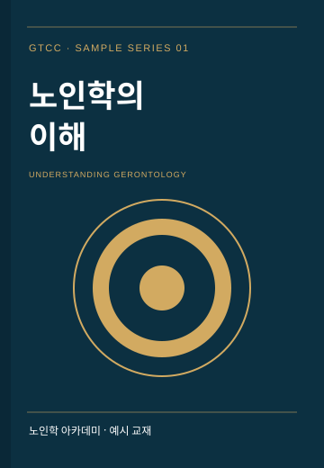
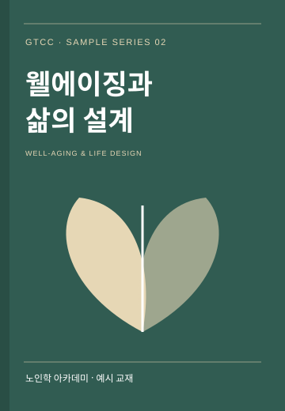
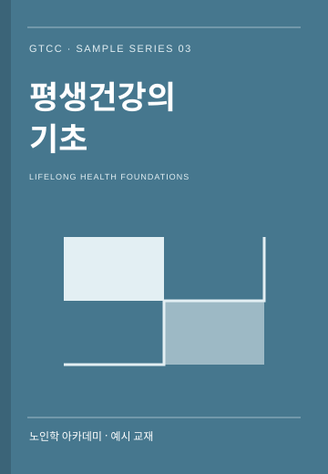
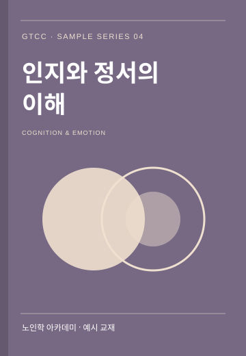
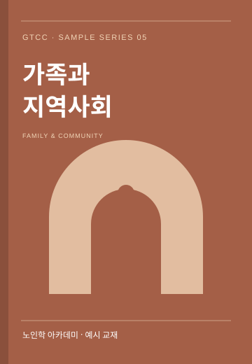
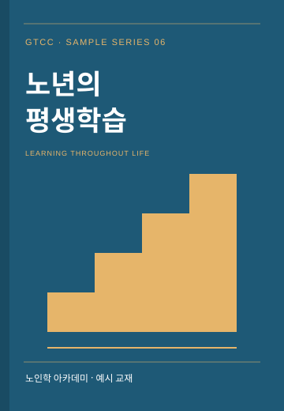
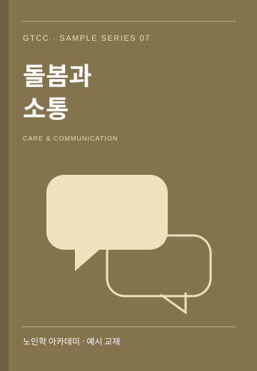

노인학과 웰에이징을 함께 탐구하는 온라인 교재실입니다.
아래 8권의 제목·표지·본문은 화면 구성을 위한 예시입니다.

노년의 삶을 바라보는 첫걸음
자료: GTCC 예시 학습자료저자: 예시 저자

나이듦과 일상의 의미 탐색

건강과 일상을 함께 생각하기

기억·감정·경험을 잇는 관점

노년의 관계와 연결을 살피다

경험에서 시작하는 새로운 배움

존중과 경청을 위한 생각 나누기
자료와 질문을 연결하는 연습